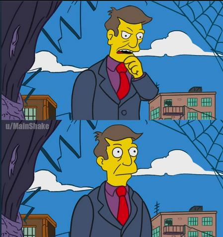

I needed to try to get them out of the way when a player wanted to start the game. The number of settings kept growing, and the Play button kept creeping further and further down out of sight. In this commit, I put a collapsible div around the game settings and added volume configurations so the player could set the track volume and key volume.
I knew I wanted a scoreboard, but I did not want to leave the player with an incomplete understanding of how they performed. I needed to add events for notes that were outside the "good" and "ok" range in order to show how far away the player was from a perfect game. The points are an arbitrary measure of success, but the counts of notes shows how much room the player has for improvement. So I added tags for "bad" and "missed" and added code to keep track of them in the Scorekeeper. The ranges are hard coded into the game here.
I have not spent much time tuning these thresholds. If I look at this article about rhythm game timings, it claims that reaction time rankings could look like this:
Once I had all the time rankings I wanted, and I had the notes changing colors according to their ranking as they passed the threshold, I was ready to added a Scoreboard after the song to let the player review how they did. It is not very eye catching, but it has the full raw score so the player understands everything that happened during the round at once. There could be opportunities here to add some judgement animations, like a score out of 5 music notes or something.
There were several bug fixes at this point that needed to be addressed before I could say I was happy with how the game worked mechanically. I made a change to stop the game when the song ended, and addressed a bug with trying to end the song, and tried to clarify the notes further by removing the top and right hand sides of the note borders. This kept the notes from being obscured by the top of previous note boxes.
I spent some time tweaking the behavior of the page to approach how I wanted the game to play. For instance, I changed what the Play button said depending on the game state here to let the player know what will happen next time they hit the button.
I also tried to make the notes more readable by capitalizing them. This had the effect of keeping the whole letter above the underlining border, where characters like "j" and "y" would cross through the border, obscuring the letter the player needed to press.
I also shifted the playing field up so the bottom portion of the represented a second in the past. This let the player see how they were doing based on the colors of the letters before the letters disappeared. It also gave them a chance to try to catch notes they missed that were still in the scoring ranges.
Now that I had reached Feature Complete in my head, it was time to remove as much processing from the game intervals as possible. Even though the game was a stuttering mess, I felt accomplished writing a working game. I went to bed with dreams of optimizations and how good the game would feel when it played at a smooth 100 frames per second.
At this point, I started sharing a link to the game with people to see how they felt about it. There was some interest, but alot of people said they were just on their phones and could not get to a keyboard. Potential players in front of a browser with a keyboard still had the hurdles of searching for their own midi file to play, downloading the file, and dragging the file into the midi drop area. As the developer of the game, with several midi files downloaded and well practiced at organizing my screen for dragging, dropping, playing, debugging, and coding, I didn't actually understand what kept players from playing at this point.
I decided that they would love it once I optimized it. Surely it was the players who were wrong.
